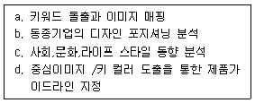
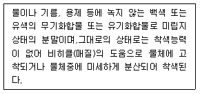
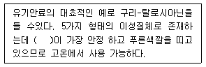
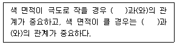

컬러리스트기사 (2009-03-01 기출문제)
1과목: 색채심리 마케팅
1. '다이나믹 코리아'라는 슬로건으로 우리나라를 홍보하는 포스터 제작시 다음 중 어떤 배색이 가장 적합한가?
- 핑크, 화이트, 스카이 블루의 배색
- 블루, 레드, 블랙의 배색
- 그레이, 화이트, 베이지의 배색
- 블랙, 그레이, 브라운의 배색
(정답률: 알수없음)

2. 색체조절을 이용한 색채계획의 설명으로 틀린 것은?
- 따뜻한 느낌을 주는 색은 다가오는 듯 크게 보인다.
- 지나치게 낮은 천장에 차가운 색을 칠하면 천장이 높아 보인다.
- 백색,회색,흑색은 백색을 위에 놓고 바라보면 불안한 느낌을 준다.
- 실내의 환경색 중 천장을 가장 밝게 하는 것이 좋다.
(정답률: 알수없음)
3. 컬러활용의 조사자료 분석에 대한 설명 중 잘못된 것은?
- 자료분석의 목적은 자료를 간명하게 요약하는 것이다.
- 통계분석 결과가 모호한 경우 확률적으로 해석하고 결론을 내리는 것이다.
- 자료를 간명하게 요약하는데는 빈도분포, 퍼센트, 평균치등의 기술통계가 유용하다.
- 자료분석의 첫단계는 소비자의 성향이나 문항들간의 관계를 기술하는 상관계수나 요인분석, 군집분석, 판별분석 등고급통계가 필요하다.
(정답률: 알수없음)
4. 산업시설의 색채계획에 대한 설명으로 틀린 것은?
- 창틀은 희색으로 하거나 외부 밝기와의 대조를 줄이기 위해 밝은 색조로 한다.
- 기계류는 담황색과 같은 엷은 색으로 두드러지게 한다.
- 계단과 복도 틈은 연노랑의 밝은 색조를 사용하는 것이 효과적이다.
- 기계류는 주의를 집중시키고,중요한 부분에 더 많은 빛을 반사시키기 위해 빨간7색으로 두드러지게 한다.
(정답률: 알수없음)
5. 데이터베이스 마케팅을 활용하는 최대의 장점은?
- 비용의 초소화
- 광고반응도 측정의 용이
- 정확한 타겟 선정가능
- 배달시기의 선정가능
(정답률: 알수없음)
6. 마케팅 전략개발의 기준이 되면서 그 제품의 속성이 소비자들에게 어떻게 인지되어 있는지를 알 수 있는 지표는?
- 제품의 포장
- 제품의 색채
- 제품의 포지셔닝
- 제품의 마케팅 전략
(정답률: 알수없음)
7. 제품특성에 근거한 시장 세분화전략의 분류방법이 아닌 것은?
- 사용자 유형, 용도
- 추구효용, 가격탄력성
- 상표인지도, 상표 애호도
- 라이프스타일, 조직특성
(정답률: 알수없음)
8. 광고가 집행되는 과정을 나열한 것으로 옮은 것은?
- 상황분석 - 광고기본전략 - 크리에이티브 전략 - 매체전략 - 효과측정 또는 평가
- 상황분석 - 광고기본전략 - 매체전략 - 크리에이티브 전략 - 효과측정 또는 평가
- 상황분석 - 매체전략 - 광고기본전략 - 크리에이티브 전략 - 효과측정 또는 평가
- 상황분석 - 매체전략 - 크리에이티브 전략 - 광고기본전략 - 효과측정 또는 평가
(정답률: 알수없음)
9. 구매의사결정의 설명으로 틀린 것은?
- 소비자의 구매의사결정과정은 문제의 인식, 정보의 탐색, 대안의 평가, 구매결정, 구매 그리고 구매 후 행동의 6단계로 구성 된다.
- 구매결정에 필요한 정보는 우선 내적으로 탐색한 후 부족하다고 판단되면 외적으로 추가 탐색한다.
- 특정상품 구매는 다른 요인에 의해서도 형양을 받지만 점포의 특징과도 밀접한 관계가 있다.
- 소비자는 구매 후 다른 행동을 옮길 수 있지만 인지부조화를 느낄 수가 없다.
(정답률: 알수없음)
10. 그린은 민트향,로즈색은 플로럴향 등과 같이 색과 향과의 관계를 정립한 사람은?
- 모리스 데리베레
- 요하네스 이텐
- 지오르디노 알마니
- 미션위젠 슈브롤
(정답률: 알수없음)
11. 색채기호조사를 위해 설문지 조사를 하였다. '자동차 색에 좋아하는 색상선택'의 문항에 대해 남ㆍ녀간의 좋아하는 자동차색을 알아보기 위해 적합한 통계적 분석방법은?
- 요인분석
- 군집분석
- 교차분석
- 수량화분석
(정답률: 알수없음)
12. 신성하고 성스러운 결혼식을 위한 장신구에 진주, 흰색, 리본, 흰색 장갑 등과 같이 흰색을 주로 사용하였다. 이는 다음 중 색채의 어떤 측면과 관련된 행동인가?
- 색채의 공감각
- 색채의 연상, 상징
- 색채의 파장
- 안전 색채
(정답률: 알수없음)
13. 매체 광고이념의 변화(과거→현재)에 대한 내용이 틀린 것은?
- 기업중심적인 고압적, 독선적 광고 → 고객중심의 저압적, 소비자 주권적 광고
- 지식적, 정보적으로 유익한 광고 → 판촉만을 위한 강압적, 설득적 광고
- 주입식의 일방적 광고 → 친근함, 유머, 기억, 건전한 광고
- 외국 광고와 유사, 모방성 광고 → 국내 독창적인 광고
(정답률: 알수없음)
14. 다음 중 컬러 마케팅의 역할이 가장 크게 돋보일 수 있는 마케팅의 단계는?
- 제품중심의 마케팅
- 제조자 중심의 마케팅
- 고객지향적 마케팅
- 감성소비시대의 마케팅
(정답률: 알수없음)
15. 다음 중 컬러(색채)시장조사 방법으로 부적합한 것은?
- 목표가 되는 소비자의 행동을 면밀하게 직접 관찰한다.
- 목표 소비자집단의 색상 기호 또는 색상 선호도를 조사한다.
- 자사 TV또는 신문광고의 만족도에 대해 사후 설문조사를 한다.
- 시멘트 같은 간접 소비재의 경우 라디오 광고 청취율을 조사한다.
(정답률: 알수없음)
16. 색채와 촉감의 연관성이 바르게 연결된 것은?
- 빨강 : 말랑말랑하고 부드러운 느낌
- 노랑 : 견고하고 굳은 느낌
- 주황 : 건조한 느낌
- 파랑 : 거칠고 메마른 느낌
(정답률: 알수없음)
17. 효과적인 컬러 마케팅 전략을 수립하고자 한다. 전략수립과 정의 순서를 가장 합리적으로 정리한 것은?

- a → c → b → d
- c → b → a → d
- c → a → b → d
- a → c → d → b
(정답률: 알수없음)
18. 어떤 주부가 광우병 파동 때 정육점에서 일일이 원산지를 확인했다. 매슬로우(Maslow)의 욕구 단계 중 어디에 해당되는가?
- 생리적 욕구
- 안전욕구
- 사회적 욕구
- 자아실현의 욕구
(정답률: 알수없음)
19. 내부 분위기를 고조시켜 매출을 올려야 하는 상업공간의 배색으로 가장 적합한 것은?
- 하늘색과 파란색으로 배색한 공간
- 흑색과 백색으로 배색한 공간
- 레드와 핑크 계열로 배색한 공간
- 베이지와 브라운 계열로 배색한 공간
(정답률: 알수없음)
20. 다음 보기의 오정색이 상징하는 의미중 나머지 3개와 관련이 없는 하나는?
- 각(角)
- 나무
- 용
- 의(義)
(정답률: 알수없음)
2과목: 색채디자인
21. 패션 디자인의 원리에 대한 설명 중 틀린 것은?
- 균형 : 시각의 무게감에 의한 심리적인 요인으로 균형을 보완, 변화시키기 위해 세부장식이나 액세서리를 이용한다.
- 색채 : 사람들이 가장 먼저 지각하고 느낌을 표현할 수 있어 소비자의 구매결정에 큰 영향을 미친다.
- 리듬 : 규칙적인 반복 또는 점진적인 변화가 있으며 디자인의 요소들의 반복에 의해 표현된다.
- 강조 : 강조점의 선택은 꼭 필요한 곳에 두며 체형상 가려야 할 부위는 될 수 있는 대로 벗어난 곳에 두는 것이 좋다.
(정답률: 알수없음)
22. 디자인의 기본원리 중 조화(harmony)의 특징에 해당하는 것은?
- 점이
- 균일
- 반복
- 주도
(정답률: 알수없음)
23. 다음의 디자인 요건 중 디자인 교육, 디자인 개발, 디자인정책도 반드시 생태적 과정, 방법, 수단 나아가 환경적 평가를 전제로 해야 하는 것은?
- 합목적성
- 경제성
- 친자연성
- 질서성
(정답률: 알수없음)
24. 패션디자인의 용어 설명 중 틀린 것은?
- 엠파이어 스타일(empirestyle) : 고전주의를 표방한 복식의 한 형태로 옷감은 얇고 비치는 것이나 몸에 감기는 부드러운 소재를 사용하였다.
- 데콜타쥬(decolletage) : 네크라인을 V, U자형으로 깊게파서 목과 가슴이 대담하게 노출되도록 하여 인체 곡선미를 강조하였다.
- 버슬(bustle) : 천을 그대로 허리에 둘러서 그 끝은 허리에 끼워 입거나 천 위에 둘러서 입는 가장 간단한 의복이다.
- 퀄팅(quilting) : 한국의 전통 누비 기법과 유사하며 현재에는 하나의 예술기법으로도 활용되고 있다.
(정답률: 알수없음)
25. 비언어적 기호의 유형이 아닌 것은?
- 자연적 표현
- 사물적 표현
- 추상적 표현
- 추상적 상징
(정답률: 알수없음)
26. 문화성을 고려한 디자인과 거리가 먼 것은?
- 지리적, 풍토적 환경을 고려한다.
- 민속적, 토속적 디자인과 관련된다.
- 생활습관과 전통을 고려한다.
- 자연친화적 디자인을 고려한다.
(정답률: 알수없음)
27. 인테리어 색채계획에 관한 내용으로 가장 관계가 먼 것은?
- 적용될 대상의 기능과 목적에 부합하여야 한다.
- 유사색 배색계획은 다채롭고 인위적으로 보이기 쉽다.
- 전체적인 이미지를 선정한 후 사용색을 추출하는 방법도 있다.
- 사용색의 소재별(재료적)특성을 고려할 필요가 있다.
(정답률: 알수없음)
28. 다음 중 팝디자인 운동과 관련이 없는 것은?
- 기술지상주의
- 역동성과 움직임
- 유선형 디자인
- 대중문화와 대중운동
(정답률: 알수없음)
29. 다음 중 시대와 패션 색채의 변천이 바르게 연결된 것은?
- 1900년대는 밝고 선명한 색조의 오렌지,노랑,청록이 주조를 이루었다.
- 1910년대는 흑색, 원색과 금속의 광택이 등장하였다.
- 1920년대는 연한 파스텔 색조가 유행했다.
- 1930년대 중반부터는 녹청색, 뷰 로즈, 커피색 등이 사용되었다.
(정답률: 알수없음)
30. 색채 배색에서 사용하는 방법을 잘못 설명한 것은?
- 강조색은 디자인 대상에 악센트를 주는 포인트 역할을 하는 색으로,전체의 5%정도를 차지한다.
- 보조색은 주조색 다음으로 넓은 공간을 차지하며, 약 25% 정도의 면적을 차지한다.
- 보조색은 보조요소들을 배합색으로 취급함으로서, 변화를 주는 역할을 한다.
- 주조색이란 전체의 느낌을 전달하는 색으로, 전체의 50%이상을 차지하는 색을 말한다.
(정답률: 알수없음)
31. 다음 중 CI(CorporateIdentity)의 3대 기본요소가 아닌 것은?
- CI(ColorIdentity)
- BI(BehaviorIdentity)
- MI(MindIdentity)
- VI(VisualIdentity)
(정답률: 알수없음)
32. 메이크업에서 기본이 되는 균형 개념과 거리가 먼 것은?
- 입체감의 균형
- 전체와 부분과의 균형
- 색상의 균형
- 좌우대칭의 균형
(정답률: 알수없음)
33. 다다이즘의 설명으로 옳은 것은?
- '앞서간다'는 의미로 미래 지향적인 성격을 가진다.
- 색채는 화려한 면과 어두운 면의 성격을 모두 가지고 있다.
- 미국에서 활발한 작가활동이 이루어졌다.
- 인간의 시지각 원리에 근거을 둔 망막의 예술이다.
(정답률: 알수없음)
34. '디자인(design)'에 관한 설명으로 틀린 것은?
- 이탈리아어의 disegno를 어원으로 한다.
- 라틴어의 designare를 어원으로 한다.
- 모든 조형활동에 대한 계획을 의미한다.
- 회화제작에 있어 예비적인 스케치는 제외된다.
(정답률: 알수없음)
35. 굿 디자인(gooddesign)과 거리가 먼 것은?
- 매년 굿 디자인을 선정하여 G마크를 부여한다.
- 국가마다 굿 디자인의 기준틀을 갖고 있다.
- 굿 디자인 요건으로 기능성,심미성,경제성,사회성 등이 있다.
- 굿 디자인은 공공척 차원의 제도로 비즈니스와 무관하다.
(정답률: 알수없음)
36. 시각적으로 일어나는 착각현상을 착시라고 한다. 다음 중 착시 현상이 잘 나타나는 예로 적합하기 않는 것은?
- 길이의 착시
- 면적의 착시
- 방향을 착시
- 형태의 착시
(정답률: 알수없음)
37. 인체 측정학에 의한 동선,신체의 위치 등을 과학적으로 분석하여 디자인에 응용하는 학문은?
- 유형학
- 인간공학
- 인간심리학
- 조형기호학
(정답률: 알수없음)
38. 도형과 바탕의 반전에 관한 내용 중 바탕이 되기 쉬운 영역의 예에 해당하는 것은?
- 기울어진 방향보다 수직,수평으로 된 영역
- 비대칭 영역보다 대칭형의 가진 영역
- 위로부터 내려오는 형보다 아래로부터 올라가는 형의 영역
- 폭이 일정한 영역보다 폭이 불규칙한 영역
(정답률: 알수없음)
39. '산업없는 생활은 죄악이고,미술 없는 산업은 야만이다. '라는 19세기 심미적 이상주의 사상에 뿌리를 둔 사조는?
- 미술공예운동
- 독일공작연맹
- 아르누보
- 구성주의
(정답률: 알수없음)
40. 디자인의 요소에 대한 설명으로 맞는 것은?
- 형은 일정한 크기,색채,질감을 가진 모양이다.
- 소극적인 면은 점의 확대,선의 이동,너비의 확대 등에 의해서 성립된다.
- 형태는 이념적 형태,순수형태,추상형태로 분류할 수 있다.
- 이념적인 형은 그 자체만으로 조형이 될 수 없으므로 지각하여 얻어 낼 수 있도록 표현한다.
(정답률: 알수없음)
3과목: 색채관리
41. 자동배색장치의 기본 원리가 되는 쿠벨카 문크 이론(Kubelka munktheory)이 성립하는 색채 사료의 종류가 아닌 것은?
- 투명한 플라스틱,인쇄잉크,완전히 불투명하지 않은 페인트
- 사진 인화, 열증착식의 연속톤의 인쇄물 (투명한 발색층이 불투명한 기판위에 있을 때)
- 옷감의 염색, 불투명 페인트나 플라스틱, 색종이 등(불투명한 발색층)
- 종이, 피혁, 털, 금속 표면 등
(정답률: 알수없음)
42. 색채 소재에 관한 설명 중 틀린 것은?
- 색료는 가시광선을 흡수하는 성질을 가지고 있다.
- 합성염료는 1855년 영국의 퍼킨(Perkin)에 의해 발명되었다.
- 유기색료와 무기색료는 리튬원소의 포함 유무로 구분한다.
- 색료는 천연화합물과 합성화합물로 나눌 수 있다.
(정답률: 알수없음)
43. 광원색과 관련된 광원의 특성에 대한 설명 중 맞는 것은?
- 순도란 광원색의 색상과 관련되는 값이다.
- 광원색은 색의 삼속성 중 색상과 채도로만 표현한다.
- 주파장선은 광원색의 채도와 상관되는 값이다.
- 녹색계열의 광원들은 색온도를 구할 수가 없다.
(정답률: 알수없음)
44. 다음은 어떤 색 재료에 대한 설명인가?

- 염료
- 안료
- 페인트
- 수지
(정답률: 알수없음)
45. 색영역과 색채구현 방법에 대한 설명으로 맞는 것은?
- 컴퓨터 모니터의 색채 구현과 프린터의 색채 구현은 근본적으로 다른 원리이다.
- 유성페인트와 수성페인트는 주색을 이루는 색료와 색채가 동일하다.
- LCD모니터의 경우 RGB의 픽셀로 감법혼색을 하는 원리를 가지고 있다.
- 사진필름의 경우 영화필름과 음화필름의 명도범위(dynamic range)는 거의 유사하다.
(정답률: 알수없음)
46. 컴퓨터 자동배색(CCM)은 색료의 분광특성을 바탕으로 색채 처방을 산출하는 장비이다. 이때 색료의 분광특성은 어떤 형태로 입력되는 것이가?
- 단위 농도당 분광반사율의 변화
- 단위 농도당 색좌표의 변화
- 단위 농도당 흡수피크의 변화
- 단위 농도당 채도의 변화
(정답률: 알수없음)
47. 다음 중에서 육안 조색시 가장 적절한 조도는?
- 약 1000lx
- 약 700lx
- 약 500lx
- 약 300lx
(정답률: 알수없음)
48. 다음 내용 중의 ( )에 가장 적합한 것은?

- β -탈로시아닌
- α -탈로시아닌
- δ -탈로시아닌
- γ -탈로시아닌
(정답률: 알수없음)
49. 육안조색의 조색 방법 중 틀린 것은?
- 시편의 삼자극치인 D65광원을 기준으로 조색한다.
- 샘플색이 시편의 색보다. 노란색을 띨 경우, b*값이 낮은 도료나 안료를 섞는다.
- 샘플색이 시편의 색보다. 붉은 색을 띨 경우, a*값이 낮은 도료나 안료를 섞는다.
- 조색 작업면은 검정색으로 도색된 환경에서 1000lx조도의 밝기를 갖추도록 한다.
(정답률: 알수없음)
50. 다음 중 모니터의 색 온도에 대한 내용이 아닌 것은?
- 6500k와 9300k두 종류 중에서 사용자가 임의로 색 온도를 설정할 수 있다.
- 색 온도의 단위는 k(kelvin)를 사용한다.
- 자연에 가까운 색을 구현하기 위해서는 색 온도를 6500k로 설정하는 것이 바람직하다.
- 색 온도가 9300k로 설정된 모니터의 화면에서는 적색조를 띠게 된다.
(정답률: 알수없음)
51. 화염테스트시 나타나는 색채가 바르게 연결된 것은?
- 리튬(lithium) : 노란색
- 포타슘(potassium) : 주홍색
- 루비듐(rubidium) : 빨강 - 자주색
- 나트륨(sodium) : 옅은 파란색
(정답률: 알수없음)
52. 글로우 방전광원의 가스 종류에 따른 광원색의 연결이 잘못된 것은?
- He : 노랑(NegativeGlow)-파랑(PositiveColumn)
- N2 : 파랑(NegativeGlow) - 주황(PositiveColumn)
- O2 : 초록(NegativeGlow) - 노랑(PositiveColumn)
- Na : 연두기미의 하양(Negative Glow) - 노랑(Positive Column)
(정답률: 알수없음)
53. 디지털 색채 시스템에 대한 설명으로 맞는 것은?
- RGB시스템은 빛을 더할 수록 밝아지는 감범혼색 체계이다.
- HSB시스템은 오스트발트 색표계를 중심으로 선택하도록 되어 있다.
- CMYK모드는 각각의 수치를 더해서 밝아지는 가법혼색의 체계이다.
- LAB시스템은 L*은 밝기를 a*, b*는 색상과 채도를 함계 나타낸다.
(정답률: 알수없음)
54. CIE표준 광원에 대한 설명이 옳게 연결된 것은?
- 표준광원 D65 : 표준광원 A에 규정한 데이비스 - 깁슨 필터를 걸어서 상관색 온도를 약 8674k
- 표준광원 A : 표준광원 D65에 규정한 데이비스 - 깁슨 필터를 걸어서 상관색 온도를 약 4874k로 한 광원
- 표준광원 B : 분포 온도가 약 2856k가 되도록 점등한 투명밸브 가스가 들어있는 텅스텐 코일 전구
- 표중광원 C : 표중광원 A에 규정한 데이비스 - 깁슨 필터를 걸어서 상광색 온도를 약 6774k로 한 광원
(정답률: 알수없음)
55. 인쇄용 필름의 강도측정을 위한 용도의 측색기는?
- 글로스미터
- 컬리미터
- 크로마미터
- 덴스토미터
(정답률: 알수없음)
56. 각파장으로 된 복수의 센서로 시료에 반사되는 반사율을 분광하고 각 파장별 반사율을 측정하여 그 데이터를 기초로 마이 콘부에서 적분계산을 하고 삼차극치 X, Y, Z의 3개 값을 삼출한다. 이는 어떤 측색 방법을 말하는가?
- 필터식 측색기 측색방법
- 분광 측색방법
- 인간의 눈에 의한 측색방법
- 광택계
(정답률: 알수없음)
57. 다음중 효율적인 염색을 위한 일반적인 조건이 아닌 것은?
- 염료가 잘 용해되어야 한다.
- 분말의 염료에 먼지가 없어야 한다.
- 액체용액을 오랜 기간 저장해도 변하지 않아야 한다.
- 착색도를 위해 적절한 입자크기를 유지해야 한다.
(정답률: 알수없음)
58. 색체측정기의 주조에 따라 형광색을 측정할 수 있는 장비와 측정할 수 없는 장비가 있다. 다음 중 형광색을 측정할 수 있는 장비는?
- 이중 빛살 방식 분광광도계(dualbeamtypespectrophotometer)
- 필터식 색체계 (filtertypecolorimeter)
- 전방 방식 분광광도계(monochromaticspectrophotometer)
- 후방 방식 분광광도계(polychromaticspectrophotometer)
(정답률: 알수없음)
59. 다음 중 필요한 광원을 적합하게 사용한 경우는?
- 백색광원 - 육류, 소시지 상점
- 적색광원 - 전시장, 세미나실, 학교강당
- 온백색광원 - 빵, 기타 식료품
- 주광색광원 - 옷, 신발 등의 상점, 공장
(정답률: 알수없음)
60. 조명용 광원에 대한 설명으로 잘못된 것은?
- 방전등은 전극간의 방전에 의해 전자와 기체 분자의 충돌로 빛이 방출된다. 이것은 예로는 고온 수은 등을 들 수 있다.
- 백열등은 전류가 필라멘트를 가열하여 빛이 방출되는 열광원이다. 공급된 전력이 대부분 빛으로 전환되므로 조명용광원 가운데 효율이 가장 높다.
- 방전등과 원리는 비슷하나 방전에 의해 발생된 자외선이 유리관 내면에 도포된 형광물질을 자극하여 빛을 방출하는 것이 형광등의 원리이다.
- 일반 형광등은 빛에 푸른 기가 돌아 차가운 느낌을 줄 뿐 아니라, 연색성이 낮은 단점을 갖고 있다.
(정답률: 알수없음)
4과목: 색채지각론
61. 다음 색채대비 중 스테인드 글라스에 많이 사용되고,현대 회화에서는 마티스,피카소 등이 많이 사용한 방법은?
- 색상대비
- 명도대비
- 채도대비
- 한난대비
(정답률: 알수없음)
62. 색의 물리적 분류가 잘못 연결된 것은?
- 광원색 : 전구나 불꽃처럼 발광을 통해 보이는 색이다.
- 공간색 : 거울처럼 완전반사를 통하여 표면에 비치는 색이다.
- 면색 : 거리감이 불확실하고 입체감이 없는 평면적인 색이다.
- 표면색 : 반사물체의 표면에서 보이는 색으로 불투명감, 재질감 등이 있다.
(정답률: 알수없음)
63. 색채혼합의 방법에 대한 설명으로 잘못된 것은?
- 두 개 이상의 스펙트럼을 겹쳐 자극을 주는 방법
- 두 개 이상의 스펙트럼을 겹치지 않게 자극을 주는 방법
- 서로 다른 자극을 계기적으로 주는 방법
- 서로 다른 작극을 공간적으로 접근시켜주는 방법
(정답률: 알수없음)
64. 다음 색채지각에 대한 설명으로 옳은 것은?
- 스펙트럼 민감도란 광수용기가 상대적으로 어떤 명암에 민감한가를 나타낸 것이다.
- 조명조건에 따라 광수용기의 민감도가 변화되는 것을 잔상이 라고 한다.
- 추상체는 간상체에 비하여 해상도가 떨어지지만 빛에는 더 민감하다.
- 추상체에 의한 순응이 간상체에 의한 순응보다 신속하게 발생한다.
(정답률: 알수없음)
65. 빛에 대한 설명으로 잘못된 것은?
- 장파장의 빨간 빛은 가장 적게 굴절되며,단파장의 보랏빛은 가장 많이 굴절된다.
- 우리가 눈으로 보는 것은 흡수된 빛을 보는 것이다.
- 모든 파방의 빛을 고르게 반사하는 경우 무채색으로 지각된다.
- 빛이 물체에 닿았을 때 가시 광선의 파장이 분해되어 반사, 흡수, 투과의 현상이 일어난다.
(정답률: 알수없음)
66. 색채지각에 있어 눈의 기능에 대한 설명 중 틀린 것은?
- 수정체는 카메라의 렌즈와 같은 역할을 한다.
- 밝은 곳에서는 4⑤nm의 빛에 대해 가장 감도가 높다.
- 홍채는 눈에 들어오는 빛의 양을 조절한다.
- 눈과 물체의 거리에 따라 수정체의 두께가 자동으로 조절된다.
(정답률: 알수없음)
67. 사람의 관심을 끌어야 하는 직업을 가진 사람의 의상색을 정할 때 특히 고려해야 할 점은?
- 색의 항상성
- 색의 운동감
- 색의 상징성
- 색의 주목성
(정답률: 알수없음)
68. 색의 명시도에 대한 설명 중 틀린 것은?
- 색의 명시도에 가장 영향을 끼치는 것은 색상, 명도, 채도중 색상의 차이이다.
- 저채도의 색상이라도 배경색과 글자색의 명도차가 크다면 명시도를 높일 수 있다.
- 검정과 노랑의 배색은 명시도가 높아 전신주 등에 적용된다.
- 물체의 색이 얼마나 잘 보이는가를 나타낸 것으로 시인성 이라고도 한다.
(정답률: 알수없음)
69. 면적대비의 효과에 대한 다음 ( )속에 들어갈 색의 속성을 순서대로 옳게 나열한 것은?

- 명도, 색상
- 색상, 채도
- 채도, 색상
- 명도, 채도
(정답률: 알수없음)
70. 중간혼합에 대한 설명으로 틀린 것은?
- 중간혼합에는 회전 혼합과 병치혼합의 두 가지 종류가 있다.
- 병치혼합은 직조된 직물의 예로 설명할 수 있다.
- 색광에 의한 병치가법혼합의 예로 컬러텔레비젼을 들 수 있다.
- 병치 혼합에서 하만그리드 현상이 나타난다.
(정답률: 알수없음)
71. 잔상에 대한 설명이 아닌 것은?
- 빛의 자극이 없어진 후에도 계속 남아있는 시자극 현상이다.
- 어떤 색이 인접한 색의 영향으로 인접색에 가까운 색으로 보이는 현상이다.
- 수술실의 벽과 수술복 등에 청록색 계통을 사용하는 것은 잔상 때문이다.
- TV화면을 응시하다 사라진 인물의 상이 보이는 것은 잔상 때문이다.
(정답률: 알수없음)
72. 다음 설명 중 색음현상과 관련이 없는 것은?
- 주위색의 보색이 중심에 있는 색에 겹쳐져 보이는 현상으로 괴테 현상이라고도 한다.
- 작은 면적의 회색이 고채도의 색으로 둘러싸일 때 회색은 유채색의 보색을 띠는 현상으로,이는 색의 대비로 설명된다.
- 양초의 빨간 빛에 의해 생기는 그림자가 보색인 청록으로 보이는 현상이다.
- 같은 명소시라도 빛의 강도가 변화하면 색과의 색상이 다르게 보이는 현상이다.
(정답률: 알수없음)
73. 다음 중 채도대비에 관한 설명으로 잘못된 것은?
- 채도가 다른 두 색을 인접시켰을 때 서로의 영향으로 채도가 높거가 낮아 보이는 현상이다.
- 순색은 채도가 높은 바탕보다는 채도가 낮은 바탕에서 더 선명해 보인다.
- 채도 대비는 인접한 두 색의 채도 차이가 클수록 뚜렷하게 나타난다.
- 채도대비는 유채색과 유채색간에 가장 뚜렷하게 느낄 수 있다.
(정답률: 알수없음)
74. 색채에 대한 느낌을 가장 옳게 표현한 것은?
- 빨간색, 주황색, 노란색 등의 색상은 경쾌하고 시원함을 느끼게 한다.
- 장파장 계통의 색은 시간의 경과가 느리게 느껴지고,단파장계통의 색은 시간경과가 빠르게 느껴진다.
- 난색계통의 색상을 높은 채도로 사용하면 흥분감을 준다.
- 색의 중량감을 주로 채도에 의하여 좌우된다.
(정답률: 알수없음)
75. 다음 중 나머지 보기와 혼색방법이 다른 하나는?
- TV브라운관에서 보이는 혼함색
- 연극무대의 조명에서 보이는 혼합색
- 직물의 짜임에서 보이는 혼합색
- 페인트의 혼합색
(정답률: 알수없음)
76. 색채의 온도감에 대한 설명으로 옳은 것은?
- 난색계통의 색채에 광택을 주면 더 따뜻하게 느껴진다.
- 중성색은 색채의 느낌이 없다.
- 한난의 색채감정은 인간의 심리적인 느낌이다.
- 파장이 긴 쪽이 차갑게 느껴진다.
(정답률: 알수없음)
77. 우리 눈은 주위 조명에 따라 색이 바뀌어도 본래의 색으로 보려는 성질을 지니고 있다. 이를 무엇이라 하는가?
- 순응성
- 항상성
- 동화성
- 균색성
(정답률: 알수없음)
78. 흑과 백의 병치가법 혼색에서는 흑과 백의 평균된 회색으로 보이지만, 흑백의 반짝임을 느끼게 하면 유채색이 보이는 현상과 관련이 없는 것은?
- 페흐너(G.TFechner)의 컬러
- 주관색(subjectivecolors)
- 벤함의 판(Benham'sTop)
- 베졸트- 뷔뤼케 현상(Bezold-Bruckephenomenon)
(정답률: 알수없음)
79. 다음 중 빛의 굴절(Refraction)현상을 볼 수 있는 것이 아닌 것은?
- 아지랑이
- 무지개
- 물에 담긴 유리컵 속의 꺾인 듯 보이는 젓가락
- 노을
(정답률: 알수없음)
80. 두 개의 색을 보게 될 때,색들끼리 영향을 주어서 인접색에 가까운 것으로 느껴지는 현상을 동화효과라 하는데 동화효과를 특징에 따라 달리 부르는 말이 아닌 것은?
- 전파효과
- 줄눈효과
- 면적효과
- 혼색효과
(정답률: 알수없음)
5과목: 색채체계론
81. 단청에 적용하고 있는 한국의 색은?
- 지백색
- 담주색
- 석간주
- 유록색
(정답률: 알수없음)
82. ‘색채 표준’과 거리가 먼 것은?
- 특수안료를 사용하여 재현한다.
- 색을 정확하게 표시하기 위해 필요하다.
- 색채간의 지각적 등보성을 갖춰야 한다.
- 색채 속성배열이 과학적 근거가 뒷받침되어야 한다.
(정답률: 알수없음)
83. 문·스펜서의 색채조화론에 대한 설명으로 잘못된 것은?
- 부조화의 원인이 되는 애매한 요인 중에서 가장 주의할 것이 명도차의 애매함이다.
- 작은 면적의 강한 색과 큰 면적의 약한 색은 조화된다.
- 자극적이고 따뜻한 느낌을 주려면 밸런스 포인트의 색을 주황이 되도록 배색해야 한다.
- 색상, 채도를 일정하게 하고 명도만 변화시키는 경우는 많은 색상의 사용시보다 미도가 낮다.
(정답률: 알수없음)
84. 다음 중 오스트발트 색채 기호에서 가장 순도가 높은 색채 기호는?
- ig
- pn
- na
- lc
(정답률: 알수없음)
85. 다음의 계통색 표기 중 옳게 표기된 것은?
- 노랑띤 밝은 빨강
- 밝은 파란 빨강
- 연한 보랏빛 검정
- 노랑빛 보라
(정답률: 알수없음)
86. 먼셀의 색입체를 수직으로 자른 단면의 설명으로 옳은 것은?
- 대칭인 마름모 모양이다.
- 보색관계의 색상면을 볼 수 있다.
- 명도가 높은 어두운 색이 상부에 위치한다.
- 한 갠 색상의 명도와 채도 관계를 볼 수 있다.
(정답률: 알수없음)
87. 아래 그림의 오스트발트 색채체계에서 보여지는 조화로 맞는 것은?
- 등백 계열의 조화
- 등흑 계열의 조화
- 등순 계열의 조화
- 등가색환 계열의 조화
(정답률: 알수없음)
88. 문·스펜서(MooSpencer)의 색채조화론 중 ‘아주 유사한 색의 부조화’에 해당되는 범위는?
- 유사조화
- 눈부심
- 제 1부조화
- 제 2부조화
(정답률: 알수없음)
89. 다음의 DIN색표기 중 색채의 순도(채도)가 가장 높은 것은?
- 2 : 3 : 3
- 12 : 3 : 3
- 3 : 9 : 3
- 2 : 3 : 6
(정답률: 알수없음)
90. 다음 전통색 이름과 내용의 연결이 옳은 것은?
- 지황색(地黃色) : 종이의 백색
- 담주색(淡朱色) : 홍색과 주색의 중간색
- 감색(紺色) : 아주 연한 붉은색
- 치색(輜色) : 스님의 옷색
(정답률: 알수없음)
91. ISCC-NIST의 색이름 부르는 법에서 기본색의 약자를 잘못 적용한 것은?
- red(R)
- olive(o)
- brown(Br)
- purple(p)
(정답률: 알수없음)
92. 다음 중 혼색계의 대한 설명으로 틀리 것은?
- 색표계 간의 색좌표 변환은 눈의 시감을 통해야 하기 때문에 정밀한 색좌표를 주하기가 어렵다.
- 수학,광학,반사,광택 등 산업규격에 의하여야 하는 단점이 있다.
- 수치적인 데이터 값을 보존하기 때문에 변색 및 탈색 등의 물리적인 영향이 없다.
- 오스트발트 색표계는 혼색계의 종류에 해당한다.
(정답률: 알수없음)
93. 오스트발트 색표계의 색상번호 17은 어떤 색상인가?
- 2P
- 2LG
- 2SG
- 2T
(정답률: 알수없음)
94. 파버 비렌(FaberBirren)의 색채조화 원리가 아닌 것은?
- Tint/Tone/Shade : 가장 세련된 배색으로 레오나르도 다빈치에 의해 시도되었고,이를 명암법이라 한다.
- Color/Tint/White : 인상주의,후기인상파 등이 많이 사용한 조화법이며,흔히 자연에서 보는 아름다운 배색이다.
- White/Gray/Black : 색조의 깊이와 풍부함이 있고 렘브란트와 같은 거장들이 사용하였다.
- 바른 연속의 미 : 색삼각형의 직선상 연속은 모두 자연스럽게 조화된다.
(정답률: 알수없음)
95. 다음 중 한국산업규격(KSA0011)에 제시되어 있는 기본 색명이 아닌 것은?
- 빨강
- 밤색
- 분홍
- 갈색
(정답률: 알수없음)
96. NCS표색계의 설명 중 틀린 것은?
- NCS표기법으로 모든 가능한 물체의 표면색을 표시할 수 있다.
- 색상삼각형의 한 색상은 섬세한 차이의 다른 검정색도와 유채색도에 의해서 변화된다.
- 노르웨이,스페인,수웨덴의 국가 표준색을 제정하는데 기여하였다.
- 업계간 원할한 컬러 커뮤니케이션을 위해 TrendColor를 포함한다.
(정답률: 알수없음)
97. 헌터 랩(HunterLab)색공간의 설명으로 틀린 것은?
- 유럽 디자인 계에서만 주로 사용된다.
- 1931년 CIE의 Yxy보다 시각적으로 더욱 통일된 색공간을 제공한다.
- 헌터(R.S.Hunter)에 의해 개발된 것이다.
- 혼색계에 속한다.
(정답률: 알수없음)
98. 오스트발트 체계에 대한 설명으로 옳은 것은?
- 오스트발트 체계의 완전색 중 노랑은 현대에서 생산되는 일반적인 노랑의 순색과 분광 반사선이 일치한다.
- 색상은 1~24까지의 번호로 표기되는데, 10~12번 영역은 PURPLE(1P~3P)이다.
- 백색량의 기호와 흑색량의 기호가 같은면 혼합된 물리적인양은 같다.
- 백색량 +흑색량 =100의 구조로 체계화 되어 있다.
(정답률: 알수없음)
99. 먼셀 표색계에 대한 설명 중 잘못된 것은?
- 먼셀의 기본색은 빨강(R), 노랑(Y), 초록(G), 파랑(B), 보라(P)이다.
- 청색계가 적색계보다 채도의 최대치가 크다.
- 7.5GY7/10에 해당하는 관용색 이름은 연두색이다.
- 먼셀 색입체에서 순색의 위치는 각각 다르다.
(정답률: 알수없음)
100. 오스트발트 표색계의 설명 중 맞는 것은?
- 오스트발트 색입체의 모양은 원통형을 하고 있다.
- 유채색의 표기는 백색량,흑색량,색상 기호의 순으로 하고 있다.
- 같은 기호의 색일지라도 명도나 채도가 모두 일치하지 않는 결점이 있다.
- 색의 삼속성에 따른 지각적인 등보도성을 가진 체계적인 배영을 하고 있다.
(정답률: 알수없음)